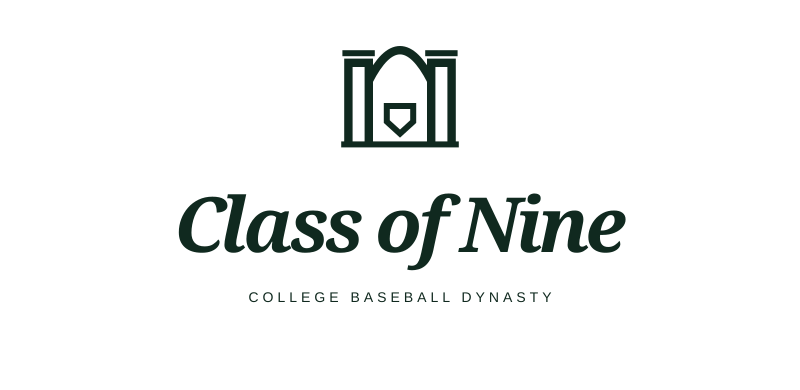

The name
Class of Nine
College recruiting, new faces and lasting traditions. Nine is a baseball motif, not a roster limit.
Compare four C9 gateway and pennant refinements →
N02 name + L04 symbol + L02 lettering
Frisk's selected identity: Class of Nine, the campus gateway, and the bold italic serif from the championship pennant concept.


Class of Nine
College recruiting, new faces and lasting traditions. Nine is a baseball motif, not a roster limit.
L04 campus gateway with home plate. Brass on forest; forest on cream. The symbol can stand alone at compact sizes.
L02's Georgia bold italic, with its tight spacing and title case. This replaces the uppercase sans-serif used in the original L04 study.